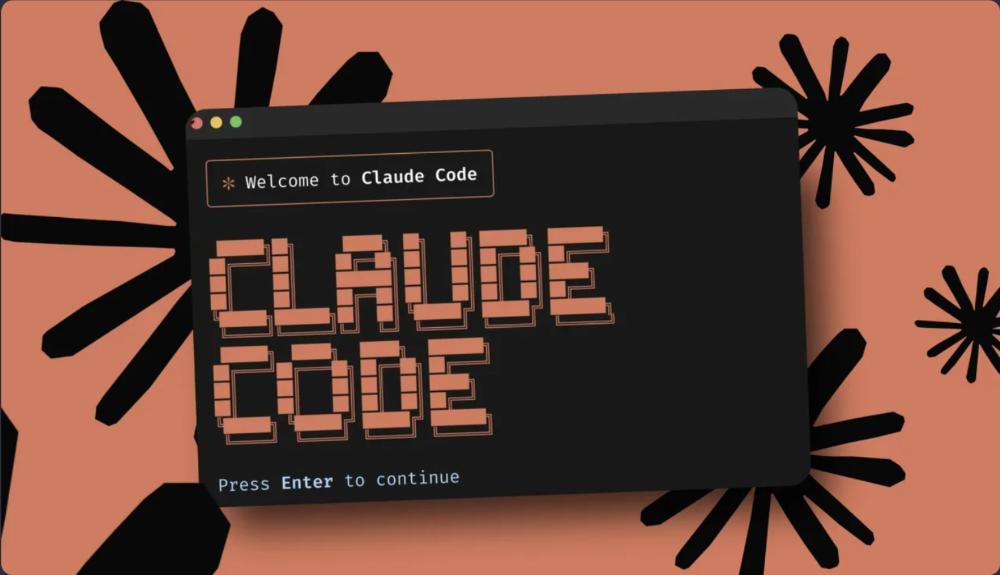
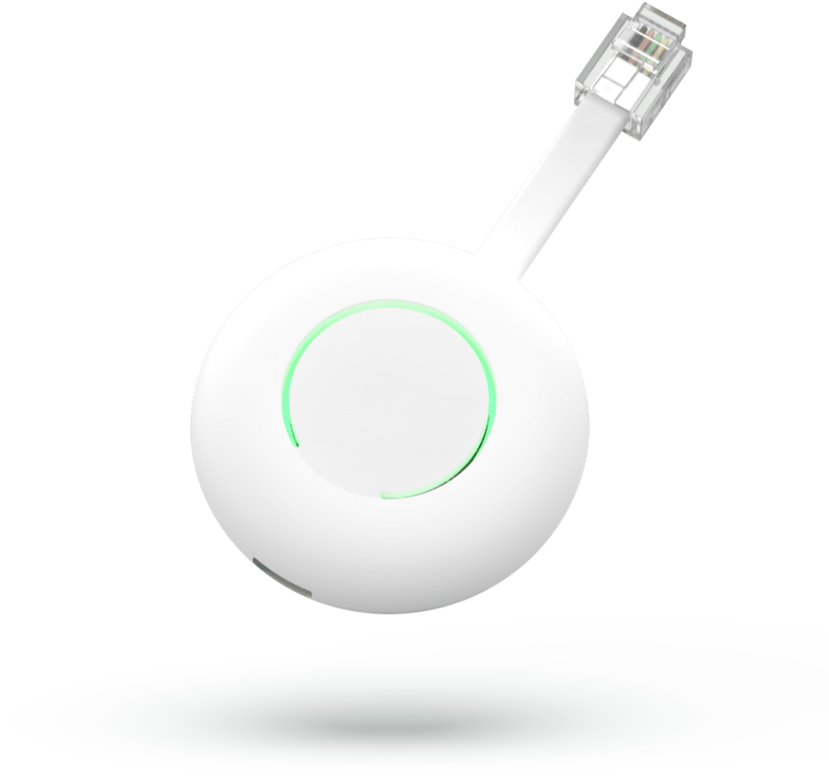

Claude Code Workshop
 ×
×
Welkom
Laptop nu open
Clone github.com/hubristech/workshop-starter en open Claude Code. Setup check volgt zo.
Vragen
Stel ze direct. Stel zo veel mogelijk.
Werkwijze
Hands-on, met zo eerst wat introductie.
API keys
Gedeeld Anthropic-account via HomeWizard.
- 20 min Blok 1 · Introductie
- 10 min Blok 2 · Security & IP
- 20 min Blok 3 · Hoe werkt Claude Code
- 10 min ☕ Pauze
- 45 min Blok 4 · Hands-on bouwen
- 5 min ☕ Pauze
- 20 min Blok 5 · Uitbreiden & Review
- 15+ min Blok 6 · Production Ready
- 10 min FAQ & Afsluiting
Workshop begeleider
- 15+ jaar data-intensieve & AI platforms
- Ex-YC founder (W2010)
- Recent: Kilocode.ai, open source Claude Code alternatief
- Nu: Co-founder Klime.com: Customer Intelligence AI | Codehive
- Platform architectuur, security-first design, agentic AI
Workshop doelen
01 · Zelfstandig aan de slag
Na vandaag kun je Claude Code inzetten voor je eigen werk. Door het te doen, niet door erover te praten. Hopelijk enthousiast en zicht op mogelijkheden en beperkingen.
02 · Context engineering
Domeinkennis effectief meegeven via CLAUDE.md.
03 · Team afspraken
Best practices die iedereen kan toepassen. Review, git workflows, CI/CD.
Introductie
Mijn journey
- 2023 Copilot completion · "handige autocomplete"
- 2024 Cursor IDE · AI als pair bij de keyboard
- Mid 2024 Claude 3.5 + agentic workflows
- Begin 2025 Kilocode IDE (dogfooding) · 20-80
- Eind 2025 Opus all the way · CLI + plan mode + sub-agents
- Nu ~90% van mijn code via agents
Het AI coding landscape
Claude Code
CLI-first · sub-agents · sterkste agentic model
Cursor
IDE-native · goede UX · multi-model · minder agentic
Kilo Code
Open source VS Code extension
GitHub Copilot
Sterk in completion · agent mode nog relatief nieuw
Gemini CLI
Google's agentic CLI · groot context window · programmeren iets zwakker
 Antigravity (Google)
Antigravity (Google)
Agent-first IDE (VS Code fork) · orchestreert meerdere agents · Gemini 3, ook Claude · nieuw
Codex CLI
OpenAI · snel in ontwikkeling · aparte model-familie
pi.dev
Open-source minimale agentic CLI · 15+ providers
Waarom Claude Code vandaag
Sterkste agentic model
Claude Opus 4.8 / Sonnet 4.6 presteert nu het hoogst op echte engineering tasks.
CLI-first
Werkt in elke terminal, VS Code, iTerm, Warp, JetBrains, Vim. Geen vendor lock-in.
Plan mode
Eerst denken, dan bouwen. Onderscheidend en leerbaar patroon.
Sub-agents & MCP
Multi-agent orchestratie. Externe tools als first-class context.
HomeWizard koos dit
HomeWizard heeft Claude Code gekozen voor vandaag. De concepten zijn uitwisselbaar: wat je leert werkt ook in Cursor, Copilot of Codex.
Werkt voor alle stacks
TypeScript / JavaScript
Rijkste training data. Next.js, React, Node, hier is Claude op z'n best.
Python
Zeer sterk voor data, scripting, ML, backends.
Go
Sterk voor systems, networking, CLI tools, cloud-native services.
Rust
Uitstekend voor low-level systems, performance-kritisch werk, embedded.
C · C++ · firmware
Goed, maar context engineering is kritisch. Datasheets, constraints, etc.
Het hands-on project
Waarom één codebase?
Consistentie, zelfde startpunt, zelfde problemen.
Het project
Next.js app rond meterstanden, login, visualisatie, CSV import.
De taken
Realistische features: auth, styling, dataviz, sharing, forecasting.
Hoe gebruik je Claude Code▶ live demo
CLI
In elke terminal: claude. De volledige engine, nieuwe features landen hier eerst. Genoeg voor vandaag.
Desktop app
Losse Mac/Windows-app. Draai meerdere Claude-sessies parallel, los van terminal of editor.
VS Code extensie
Inline chat + diff review naast je editor. Zelfde engine eronder, fijn voor wie liever niet in de terminal werkt.
JetBrains
Plugin voor IntelliJ, PyCharm, GoLand, CLion, etc. Voor wie in de JetBrains-IDE's leeft.
Setup check
- Claude Code CLI geïnstalleerd ·
claude--version - VS Code-extensie of JetBrains-plugin · optioneel, alleen CLI is genoeg
- Workshop repo gecloned en
npm installdraait - API key gezet ·
ANTHROPIC_API_KEYin je env - Node 20+ · Git · werkende terminal
Security & IP
Security & IP
Wat stuurt Claude Code?
Prompts + alle files die Claude in de sessie leest of greppt. Geen auto-upload, maar brede prompts kunnen de hele repo raken. Buiten je working dir: niets.
IP & secrets beschermen▶ live demo
Secrets in env vars, nooit in prompts. /permissions
om te beperken (of .claude/settings.json openen).
Denk aan firmware blobs en interne specs.
API key opties
Google Vertex (data in GCP) ·
 AWS Bedrock (data in AWS).
Beide houden data in eigen cloud.
AWS Bedrock (data in AWS).
Beide houden data in eigen cloud.
Workshop vandaag
HomeWizard heeft zelf keys/accounts. We gaan niet met de HomeWizard-code aan de slag.
Hoe werkt Claude Code
CLI basics▶ live demo
VS Code extensie▶ live demo
Inline chat
Chat-paneel naast je editor. Ziet je open files.
@-mentions
Tag specifieke files, functies of folders als context.
Diff review
Claude's edits verschijnen in de VS Code source control view. Review ze daar.
Zelfde engine
Onder de motorkap: dezelfde CLI. Wissel gerust heen en weer.
Loopt achter!
Niet alle features zijn al beschikbaar in de UI of als slash commands (bijv. git worktrees).
Model keuzes▶ live demo
Opus 4.8
Planning, architectuur, complexe refactoring. Slimst voor harde problemen.
Sonnet 4.6
Default werkpaard. Snelheid, kosten en kwaliteit in balans. 95% van taken.
Haiku 4.5
Batch, bulk edits, CI-runs, snelle scans. Goedkoop en snel.
/model · effort-niveaus sturen denktijd, Opus 4.8 staat default op high · cijfers via anthropic.com
Begin met codebase Q&A▶ live demo
- Stel de vragen die je een senior engineer zou stellen
- Geen speciale prompt nodig
- Claude leest sneller, vat samen, linkt naar regels
- Onboarding sneller, druk op collega's lager
CLAUDE.md · het fundament
Start met /init
Genereert een eerste versie op basis van je codebase. Daarna verfijnen.
Wat erin?
Bash commands · afwijkende code style · test runners · repo-conventies · env-quirks · niet-obvious gotchas.
Wat NIET erin?
Wat Claude uit de code kan lezen · standaard taalconventies · self-evident regels.
Behandel als code
Commit mee · PR-review · prune · te lang = Claude negeert regels. IMPORTANT/YOU MUST als emphasis.
AGENTS.md
Cross-tool standaard, werkt hiërarchisch: geneste files per map, dichtstbijzijnde wint. Claude Code leest CLAUDE.md, niet AGENTS.md: zet @AGENTS.md boven in je CLAUDE.md of laat /init het opnemen. Eén bron voor alle tools.
Amnesia + auto-memory
Elke sessie start blanco. CLAUDE.md = manuele projectcontext in git. Auto-memory (~/.claude/.../MEMORY.md) = Claude's observaties over jou en het project, automatisch bewaard.
CLAUDE.md voorbeeld
Explore · Plan · Code · Commit▶ live demo
01 · Explore
Plan mode aan (Shift+Tab). Claude leest code, beantwoordt vragen, maakt geen edits. Begrijp eerst, code later.
02 · Plan
Vraag een concreet plan: welke files, welke flow, welke tests. Ctrl+G opent het plan in je editor om te tweaken.
03 · Code
Plan mode uit. Claude bouwt en verifieert tegen het plan. Volg de diffs.
04 · Commit
Claude schrijft commit message + opent PR met test plan in de body.
Feedback loops
Verifieerbare success criteria
Geef testcases, expected outputs of een screenshot mee, geen vage opdracht.
Lint · typecheck · tests▶ live demo
Laat Claude npm run lint en tsc zelf draaien (werken direct in de starter). Tests? Claude schrijft ze met vitest en draait ze daarna.
Visuele verificatie
Paste screenshot van de gewenste UI, laat Claude er één maken en de twee vergelijken tot match.
Root cause, niet symptoom
"Build faalt met error X · fix de root cause, suppress de error niet."
Slash commands▶ live demo
/init
Genereer CLAUDE.md, één keer per repo.
/clear
Reset context. Nieuwe sessie, geen history.
/compact
Vat sessie samen, behoud kernpunten.
/review
Eigen code reviewen · functioneel + security.
/agents
Beheer sub-agents.
/goal
Completion-conditie. Claude werkt tot voldaan.
Custom
.claude/skills/foo/SKILL.md voor je eigen /foo.
/help (alleen in de CLI) toont alles wat in jouw versie zit. Meer over /clear en /compact straks bij context-management.
Skills · herbruikbare workflows
In het starter project▶ live demo
.claude/skills/{gc,gcp,pr,grill-me}/SKILL.md. Git: /gc commit · /gcp commit + push · /pr open pull request (geen --amend, geen --no-verify).
/grill-me · interviewt je over je plan tot shared understanding. Bron: mattpocock/skills.
Auto-invoke of expliciet?
disable-model-invocation: true zorgt dat de skill alleen via /<name> triggert · handig voor git-acties die je zelf wilt sturen.
Wanneer een skill?
Patroon herhaalt zich? Maak een skill. Body laadt alleen on-demand, dus dure procedures kosten niets tot je ze gebruikt.
Voorbeelden om te delen
/fix-issue 1234 · /deploy.
Open standaard
Skills volgen de Agent Skills-standaard · werken ook in Cursor en Codex.
Context management
Context window
200K-1M tokens, waarde daalt naar het einde. Bij ~70% actief opruimen.
Wanneer /clear
Nieuwe taak los van vorige. Vermijdt contamination.
Wanneer /compact
Lange sessie zelfde onderwerp. /compact focus on X voor sturing.
Wanneer /context▶ live demo
Toont token-verdeling per tool/file/MCP-server. Spot bloat: wie vreet je context window op?
Escape & rewind
Esc stopt Claude midden in actie. Esc+Esc of /rewind herstelt conversatie/code naar checkpoint (automatisch bij elke change).
"Undo that"
Claude draait zijn eigen changes terug.
Sub-agents · delegation
Delegation flow
Main spawnt sub-agent → die leest files, runt tools → stuurt alleen een samenvatting terug.
Eigen context
Sub-agent leest 20 files in een eigen window; jij ziet alleen de conclusie. Geen file-dumps in jouw context.
Investigation
"use a subagent to investigate how auth handles token refresh".
Adversarial review
Na implementatie: "use a subagent to review this diff for edge cases". Verse ogen, geen bias.
Common failure patterns
Kitchen sink session
Eén taak, dan iets anders, dan terug. Context vol ruis. → /clear tussen losse taken.
Correcting over and over
Twee keer corrigeren, nog niet goed? Context vervuild. → /clear + nieuwe prompt met wat je geleerd hebt.
Over-specified CLAUDE.md
Te lang? Belangrijke regels verdwijnen in de ruis. → Prune. Doet Claude het al goed zonder, schrap.
Trust-then-verify gap
Plausibel ogende code, edge cases falen. → Verifieerbare criteria. Geen verificatie, geen ship.
Infinite exploration
"Investigeer dit" zonder scope. Claude leest 200 files. → Scope smal of sub-agent.
Herken het, herstart
Herken het patroon, herstart, ga door.
PAUZE
Hands-on bouwen
Het project · meterstanden app

Basisopdrachten
- Gebruikers kunnen inloggen
- HomeWizard huisstijl overnemen
- CSV met meterstanden uploaden & visualiseren
Add-ons · als je snel klaar bent
- Meterstanden delen met andere gebruikers
- Voorspelling op basis van historische data
- Weerdata ophalen en ernaast tonen
Vuistregels voor de hands-on
Plan eerst
Plan mode aan. Claude schrijft uit, jij reviewt, dan pas approve.
Geef specifieke context
Welk bestand (@file.ts), welke conventie ("zoals
X.tsx"), welk symptoom. @ voor files, paste
screenshots, pipe data (cat error.log | claude).
Klein + vertical slices
Kleine stapjes als vuistregel. Eén feature door DB → API → UI → tests. Dunne slice die e2e werkt > halve lagen. Direct testbaar = directe feedback.
Laat bouwen + verifiëren
Volg diffs. Claude draait tests, typecheck, lint zelf. Geen verificatie? Geen ship.
Review
/review voor
functioneel + security. Of sub-agent in verse context.
Go time!
Vóór coderen
- Snapt Claude de codebase?
- Plan gemaakt en gereviewd?
- Scope klein genoeg?
- Tests & stopconditie helder?
Ná Claude
- Diff gereviewd, tests groen?
- Edge cases gecheckt?
- Geen onnodige complexiteit?
- Klein gecommit?
- Tijdsbudget: ~40 minuten
- Claude API key al actief in je env
- Laat het weten als je een vraag hebt
- Stuck? Plan mode → laat Claude het zelf uitleggen
PAUZE
Uitbreiden & Review
Wat heb je gebouwd?
Wat ging goed?
Welk deel was verrassend snel? Waar was Claude nuttig?
Waar liep je vast?
Context te groot? Verkeerde aannames? Hallucinaties?
Wat leer je hiervan?
Prompt dat wél werkte · pattern dat niet werkte · tip voor de rest.
Code review met AI
Security scan
/security-review · OWASP top 10 als prompt template./security-review
Built-in slash command. Scant je diff en rapporteert findings met severity. Waar het naar kijkt:
- Injection · SQL, NoSQL, command · unsanitized input
- Broken auth · session handling, missing checks op API routes
- Secrets in code · hardcoded keys, credentials, connection strings
- XSS & CSRF · unescaped input, missing tokens op mutaties
- Business logic · klopt de auth-logica? Vaak beter dan static tools
/security-review als laatste stap voor je een PR opent. Daarna handmatig inzoomen op de categorie die er voor jouw repo het meest toe doet.
Production Ready
CLAUDE.md als team artifact
Team standards
Code style · git flow · naming · testing philosophy. Hier hoort het, niet in een wiki.
Ownership
Wie update? Suggestie: elke PR die een nieuw pattern introduceert update ook CLAUDE.md.
Iteratief
Als Claude fouten blijft maken op iets, voeg het toe. Elke fix is een update waard.
Onboarding
Nieuwe teamleden krijgen via CLAUDE.md het mentale model in 5 minuten. Beter dan een wiki die niemand opent.
Hooks & Policies
Wat?
Scripts die automatisch draaien bij events: na elke file edit, voor commit, bij session stop, etc.
Voorbeelden
ESLint na elke edit · migrations/ folder blokkeren voor writes · Slack-bericht bij completion · sound notification.
Config
.claude/settings.json met hook events + commands. Claude kan ze voor je schrijven.
PeonPing
peonping.com · Hooks die game-character voice lines spelen bij Claude events (completions, permission requests). MCP + IDE hooks.
Git workflows met Claude
/gc, /gcp, /pr/gc · commit
Skill in .claude/skills/gc/SKILL.md: stage check → diff lezen → conventional commit volgens jouw CLAUDE.md-conventie. Geen --no-verify, geen amend.
/gcp · commit + push
Zelfde als /gc maar pusht direct. Voor branches waar je solo werkt; main blokkeer je via een hook.
/pr · open pull request
Skill schrijft titel + body (summary, test plan, risks) op basis van diff vs main en opent de PR via gh pr create.
/gc tikt.
MCP · Model Context Protocol▶ live demo
Wat is het?
Open protocol (door Anthropic, modelcontextprotocol.io). AI tools praten met MCP servers voor data en acties.
Waarom?
Geen custom integraties meer. Schrijf één MCP server, elk AI-tool kan het gebruiken.
Installeren
claude mcp add voor stdio, SSE of HTTP. Of .mcp.json in de repo, deelbaar met je team. /mcp beheert + authenticeert.
Relatie tot plugins
Een plugin bundelt skills, hooks, slash commands én MCP-servers in één pakket (via /plugin + marketplaces). MCP = protocol, plugin = distributie.
Voor Claude Code
Toegang tot Linear, GitHub, Sentry, Slack, als first-class context.
Zelf bouwen
SDKs in TS en Python · kleine MCP server in een uur. Voor interne tools goud waard.
MCP voorbeeld · Linear
MCP ecosystem
GitHub
PRs, issues, actions · official MCP server.
Linear
Tickets, projects, cycles · official.
Sentry
Errors en stack traces · direct als context.
Postgres / Supabase
Query je DB · schema als context.
Eigen · hardware?
Voor embedded: custom MCP die Renode output + sensor-data terugkoppelt aan Claude.
Context7
Recente library docs · vult training-data gat op.
claude mcp add context7 -- npx -y @upstash/context7-mcp, check met /mcp en vraag Claude naar de laatste Next.js 16 API.
CI/CD & headless mode
PR reviews
GitHub Action die Claude laat meelezen op elke PR.
Bulk migrations
Rename props in 200 components, structured output, deterministic.
Docs genereren
Elke release notes auto-generated uit diff + commits.
Auto mode · unattended runs
Wat?
Permission mode waar een classifier-model commands voor-checkt. Routine work loopt door, escalation/risky stuff wordt geblokt.
Wanneer?
Lange migraties · CI runs · /goal-loops · bulk operations. Alles waar jij niet zit te klikken.
Hoe?
claude --permission-mode auto -p "fix all lint errors", of in-session via /permissions → auto.
Veiligheid
Aborteert in headless als de classifier herhaaldelijk blokt. Combineer met /sandbox (OS-isolatie) of --allowedTools voor scope.
Team afspraken
Wanneer wel
Boilerplate · refactors · tests · docs · exploratie · code review.
Wanneer niet
Kritieke systemen · weinig test coverage · veel code complexiteit/dependencies.
Review cultuur
AI-gegenereerde code krijgt geen vrijstelling van review, krijgt juist méér aandacht.
Monitoring
Anthropic Enterprise admin-console · per-user usage · budget alerts.
FAQ
Wat is de beste workflow?
Gaandeweg itereren naar wat het beste past. Community is ook nog "zoekende" · de tooling verschuift elk kwartaal, dus blijf experimenteren in plaats van vastklikken op één recept.
Wat met hallucinaties?
80% komt uit gebrek aan context. Plan mode + review + CLAUDE.md.
Wat als Claude verdwijnt?
Concepten (context engineering, plan-first) zijn overdraagbaar.
Resources
Docs
claude.com/claude-code
docs.anthropic.com
Workshop repo
De repo die jullie hebben gecloned bevat ook presentation.html · de slides van vandaag.
Skills inspiratie
Karpathy guidelines · mattpocock/skills · Agent Skills standaard
Community
Anthropic Discord · r/ClaudeAI · Hacker News threads.
Bedankt!
Bonus · AI + fysieke hardware
Wat Claude wél kan voor embedded
- Firmware schrijven · C/C++/Rust
- Unit tests · draaien lokaal zonder HW
- HAL opzetten · meer code testbaar
- Protocol-implementaties · P1, Zigbee
- Datasheets als context · via CLAUDE.md
Renode · firmware emulator
Open source SoC emulator (Antmicro, MIT, renode.io). Draait unchanged firmware binaries op virtuele boards met peripherals & sensors.
- Deterministic time flow · stoppen, inspecteren, delen
- CI zonder test rigs
- macOS native ARM64 (mei 2025)
- RP2040 community support